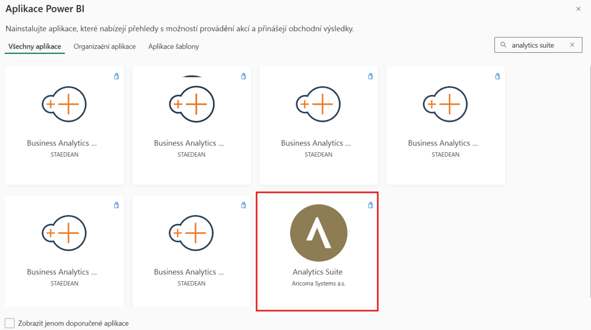

Analytics Suite – Nastavení
Aktualizace: 01.06.2025
Modul Analytics Suite rozšiřuje možnosti analýzy dat a vizualizace klíčových ukazatelů v prostředí Dynamics 365 Business Central. Pro správné fungování je nutné provést následující nastavení:
- Instalace rozšíření v Business Central
- Nastavení Analytics Suite v Business Central
- Připojení Power BI aplikace k vlastním datům
Instalace rozšíření v Business Central
- Přihlaste se do prostředí Business Central.
- Otevřete AppSource a vyhledejte Analytics Suite.

- Vyberte rozšíření Analytics Suite for Business Central a klikněte na Nainstalovat aplikaci.

- Dokončete instalaci dle průvodce.
Nastavení Analytics Suite v Business Central
- Vyberte ikonu
 , zadejte Nastavení Analytics Suite a poté vyberte související odkaz.
, zadejte Nastavení Analytics Suite a poté vyberte související odkaz. - Na stránce Nastavení Analytics Suite aktivujte modul zaškrtnutím políčka Povoleno.

- Vyberte ikonu , zadejte Informace o společnosti a poté vyberte související odkaz.
- Na stránce Informace o společnosti a u dalších společností, které chcete analyzovat v Analytics Suite, aktivujte možnost Zahrnout do Analytics Suite.
Připojení Power BI aplikace k datům
Pro správné zobrazení reportů a dashboardů je nutné propojit Power BI aplikaci s vaším prostředím Business Central:
- Přejděte na powerbi.com a přihlaste se.
- V levém panelu zvolte Aplikace.
- Klikněte na Získat aplikace.
- Do vyhledávacího pole zadejte Analytics Suite a vyberte aplikaci od společnosti Aricoma.

- Klikněte na Získat hned a nainstalujte aplikaci.
- Otevřete aplikaci Analytics Suite v příslušném workspace.

- Klikněte na Připojit data.
- Do pole EnvironmentName zadejte název prostředí vaší instance Business Central.